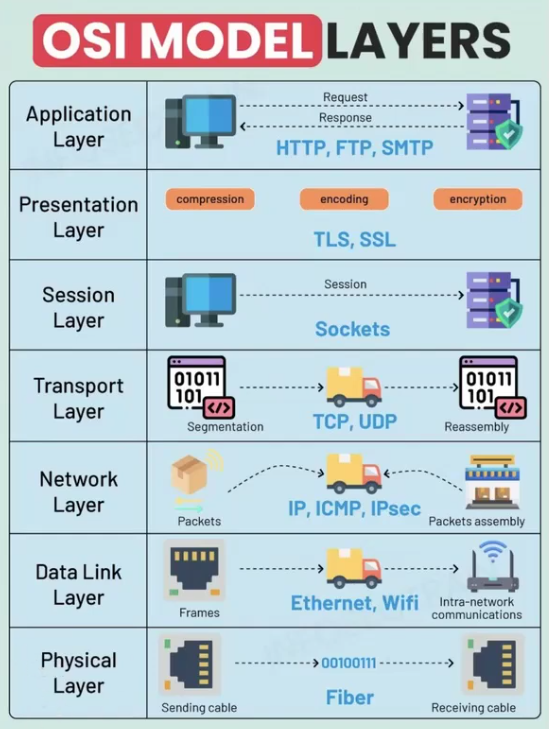

xv6-networking¶
Конспекты / Операционные системы (hard) / Практика 4 - xv6-networking
Сетевой стек¶
Сеть - это некоторый набор протоколов и абстракций, которые имеют четкую иерархию и позволяют обмениваться устройствам пакетами по всем миру
В какой то момент (уже достаточно давно) была приняла OSI Model, которая делит реализацию сети на определенные уровни абстракции, обозначают их L1 (Physical) - L7 Application

- L1 реализует сетевая карта
- За L2-L4, как правило, отвечает ядро
- В L5-L7 уже работают библиотеки в user-space
Драйверы¶
Драйверы используются в операционной системе как способ абстрагироваться от конкретного железа и его особенностей, в общем случае реализация конкретных протоколов общения с железками спрятана именно в драйвера
HAL (Hardware Abstraction Layer) - это абстракция обобщающая все драйвера и другие подобные компоненты, которая предоставляет какой-то общий интерфейс, с которым уже и работает OS
Реализация общения с железом¶
Прерывания¶
Прерывания в контексте взаимодействия с устройствами это прямой способ для железа инициировать исполнения кода в процессоре, обычно прерывания реализованы прямо на уровне архитектуры процессора
- В простых системах изменения напряжения на ножке процессора уже генерирует прерывание:
- Устанваливает регистры в положение, в котором понятно, что произошло
- Меняет
PCв положение, в котором реализован обработчик прерываний
- В сложных системах может быть очередь прерываний, которую реализует контроллер прерываний (PIC)
Способы передачи информации¶
Передачу информации между системой и железом делят на две категории: - Программный ввод/вывод (PIO) - Работает с помощью регистров устройства, которые отображены на фиксированные адреса в физической памяти - Но на самом деле работа с этими адресами не задействует память, а обработка происходит на уровне пространства памяти процессора - Регистров по сути мало, так мы ждем прерывания, после которого можем считать данные с адреса - Просто реализуется, но маленькая пропускная способность, не применимо для больших данных - Прямой доступ к памяти (DMA) - Идея в том, чтобы передать в регистры устройства адрес буфера в нашей физической памяти, в которую ему будет разрешено писать - Далее устройство сможет самостоятельно писать в этот буфер - Получение данных от устройства происходит вообще без процессора - Прерывания происходят куда реже, что снижает нагрузку на процессор - Сложнее реализовать и нужна память под буфер
Реализация сетевого стека¶
 - Пакеты уровня N состоят из заголовка и данных. Данные состоят из заголовка пакета уровня N+1 и данных.
- То есть заголовки пишутся последовательно
- Многобайтовые переменные пишутся в Big-Endian (а в Risc-V используется Little-Endian)
- Пакеты уровня N состоят из заголовка и данных. Данные состоят из заголовка пакета уровня N+1 и данных.
- То есть заголовки пишутся последовательно
- Многобайтовые переменные пишутся в Big-Endian (а в Risc-V используется Little-Endian)
Ethernet¶
IP¶
TCP/UDP¶
В то время как IP мы использовали чтобы наш пакет попал в нужное устройство, то L4 уже позволяет нам с помощью заданного порта достучаться до конкретной программы на устройстве
На этом уровне мы так же определяем то, как будем работать с передаваемыми данными - обрабатывать "как есть" или дополнительно проверять целостность и последовательность пакетов / перепосылать их при потере данных